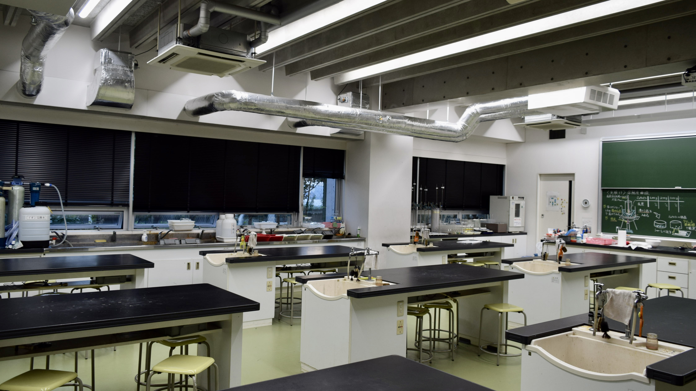
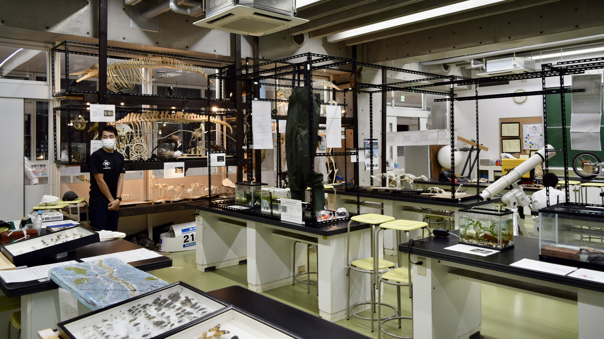

化学室
新型コロナウイルスの感染が拡大している状況を鑑み、誠に勝手ながらすべての体験型展示や科学体験教室は中止とさせていただきます。何とぞご理解のほどよろしくお願い申し上げます。
トップ
more →

生物室
more →
校 庭
more →
ｱﾝｹｰﾄ
more →
科学体験教室
化学室では、科学体験教室を実施します。中学１,２年生は全て実験授業なので、顕微鏡の扱いには中学1年生でもかなり慣れています！そんな中学１年生が主となって皆さまをサポート致しますので、是非ご参加いただければ幸いです。
葉脈標本を作ってみよう！
プランクトンを観察しよう！
葉脈標本を作ってみよう！
予約制
葉脈標本とはその名の通り葉の葉脈を観察できる標本のことです。この実験では葉を重曹を加熱した炭酸ナトリウムに漬け煮詰めます。そして流水で流し、ブラシで叩いて丁寧にクリーニングします。最後に薄めた酢酸で漂白し乾燥させたら完成です。
プランクトンを観察しよう！
予約制
本校には１人１台分の顕微鏡があります。今回はその顕微鏡を使ってプランクトンの観察をします。 この実験ではプランクトンがたくさん入っている水槽から駒込ピペットて採取をし、プレパラートを作成して顕微鏡で観察をします。
東京都市大学等々力中学校高等学校 理科部 HP
東京都市大学等々力中学校高等学校 理科部 Twitter
東京都市大学等々力中学校高等学校 HP
Copyright©TCU Todoroki Science Research Club , All Rights Reserved.